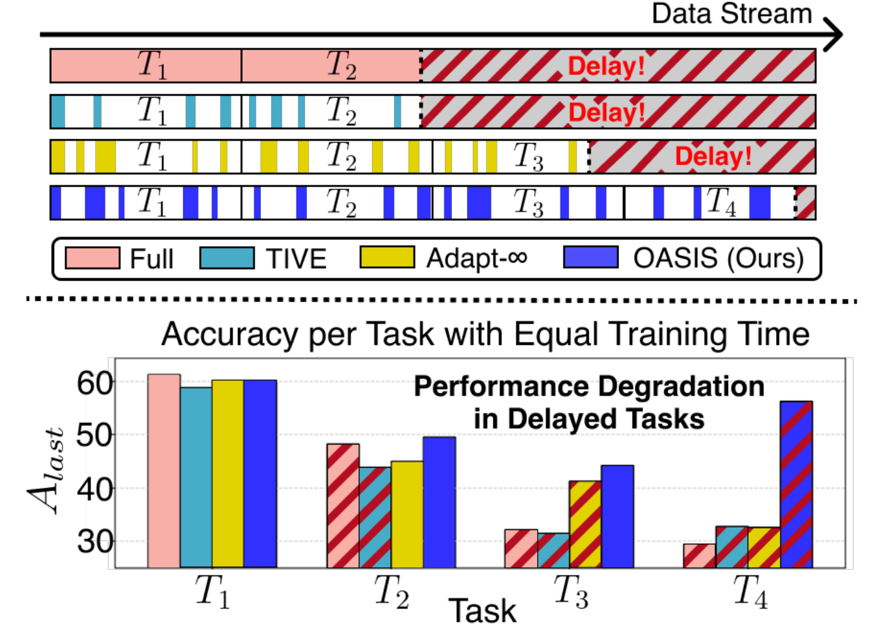
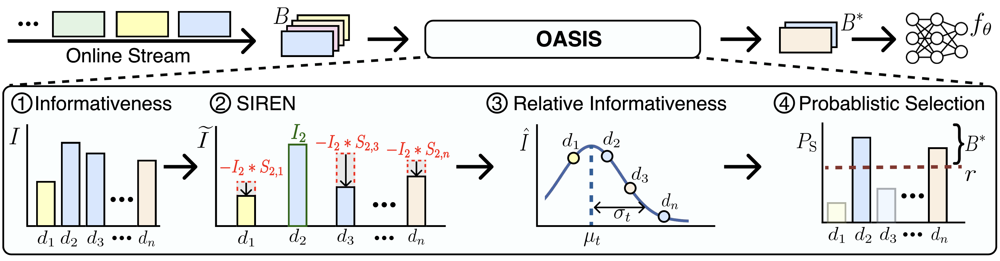

In continual instruction tuning (CIT) scenarios, where new instruction tuning data continuously arrive in an online streaming manner, training delays from large-scale data significantly hinder real-time adaptation. Data selection can mitigate this overhead, but existing strategies often rely on pre-trained reference models, which are impractical in CIT setups since future data are unknown. Recent reference model-free online sample selection methods address this, but typically select a fixed number of samples per batch (e.g., top-k), making them vulnerable to distribution shifts where informativeness varies across batches.
To address these limitations, we propose OASIS, an adaptive online sample selection approach for CIT that (1) selects informative samples by estimating each sample's informativeness relative to all previously seen data, beyond batch-level constraints, and (2) minimizes informative redundancy of selected samples through iterative selection score updates. Experiments on various large foundation models show that OASIS, using only 25% of the data, achieves comparable performance to full-data training and outperforms the state-of-the-art sampling methods.
When data keep arriving, time spent on old tasks is time not spent on new ones.

Scores samples with a model pre-trained on the data in advance. Not feasible in a stream, where future data are unknown.
Takes the top-k samples of every batch. Keeps uninformative samples from easy batches and discards useful ones from informative batches.
Judges each sample against everything seen so far, so the number selected per batch follows the stream.
Informative samples are unevenly spread over time. Some batches hold many novel or forgotten samples, others hold few, and a fixed quota ignores the difference.
Similar instances recur and co-occur in a stream, so many samples in a batch get similar scores. Taking the top-k picks near-duplicates.
OASIS combines two components: ORIS decides how informative a sample is relative to all previously seen data, and SIREN discounts samples that repeat what is already selected.

Score every sample in the batch with an efficient Fisher Information approximation that uses last-layer gradients only.
Starting from the most informative sample, lower the scores of the remaining samples according to their gradient similarity to it, and repeat.
Normalize the updated scores with a running mean and variance (EMA, EMV) of informativeness over the stream, giving a Z-score.
Turn each Z-score into a selection probability with a sigmoid and sample from it, so easier samples still have a nonzero chance.
Raw scores cannot be compared across batches because the model keeps changing. ORIS compares each sample with running statistics instead, so informative batches contribute more samples and easy batches fewer. It needs only the target selection ratio, not the total stream length, so it runs on endless streams.
Training on one sample reduces what similar samples can still teach. Recomputing every score after each selection is too expensive, so SIREN approximates the change with gradient similarity and corrects overlapping deductions with the inclusion–exclusion principle. No re-forwarding is needed.
Aavg is the average accuracy measured at each task boundary and Alast is the accuracy at the end of training. For standard deviations and more analyses, see the paper.
On MICVIT with LLaVA-1.5-7B, OASIS is the best selection method at 6.25%, 12.5%, and 25%, with the largest margin at the smallest ratio.
The lead holds on multimodal (COAST, Adapt) and text-only (Long Sequence, TRACE) benchmarks, and on Qwen-VL-2.5-7B (Alast 76.41 vs. 78.18 for full data at 25%).
OASIS reaches higher accuracy with fewer FLOPs than the baselines, and its selected samples are the most diverse by kernel density.
| Method | 6.25% | 12.5% | 25.0% | |||
|---|---|---|---|---|---|---|
| Aavg | Alast | Aavg | Alast | Aavg | Alast | |
| Random | 61.15 | 67.29 | 64.50 | 71.33 | 65.48 | 73.84 |
| GradNorm ICML 2018 | 61.23 | 66.33 | 63.68 | 70.51 | 65.81 | 72.03 |
| Self-Sup NeurIPS 2022 | 58.05 | 64.61 | 62.84 | 69.48 | 64.39 | 71.81 |
| COINCIDE EMNLP 2024 | 59.28 | 64.83 | 62.33 | 69.50 | 64.92 | 72.25 |
| DBP ICLR 2024 | 57.14 | 63.24 | 60.64 | 67.85 | 62.14 | 70.13 |
| InfoBatch ICLR 2024 | 60.82 | 68.88 | 64.87 | 73.63 | 66.41 | 74.70 |
| DivBS ICML 2024 | 61.07 | 69.06 | 65.31 | 73.76 | 64.22 | 75.38 |
| TIVE arXiv 2024 | 58.75 | 64.19 | 61.27 | 68.38 | 64.29 | 72.76 |
| Adapt-∞ ICLR 2025 | 59.13 | 64.37 | 61.53 | 69.82 | 65.50 | 73.57 |
| OASIS (Ours) | 64.39 | 71.76 | 66.89 | 75.60 | 68.84 | 77.95 |
| Full-data training | 71.80 | 79.66 | 71.80 | 79.66 | 71.80 | 79.66 |
MICVIT with LLaVA-1.5-7B at three selection ratios (Table 2 of the paper, means over three seeds). Bold marks the best selection method.
| Method | COAST | Adapt | Long Sequence | TRACE | ||||
|---|---|---|---|---|---|---|---|---|
| Aavg | Alast | Aavg | Alast | Aavg | Alast | Aavg | Alast | |
| Random | 23.57 | 30.80 | 47.64 | 40.26 | 70.90 | 68.02 | 43.44 | 52.27 |
| InfoBatch | 22.93 | 29.14 | 47.65 | 40.60 | 74.38 | 69.84 | 41.26 | 50.19 |
| DivBS | 23.41 | 31.72 | 47.25 | 40.38 | 74.37 | 70.65 | 44.25 | 52.23 |
| Adapt-∞ | 22.42 | 29.39 | 45.06 | 35.51 | 71.48 | 68.45 | 42.38 | 50.48 |
| OASIS (Ours) | 25.67 | 34.23 | 49.98 | 43.94 | 75.26 | 71.91 | 45.56 | 53.48 |
| Full-data training | 31.56 | 39.06 | 55.89 | 54.26 | 85.83 | 82.83 | 50.84 | 57.73 |
Other CIT benchmarks at a 6.25% selection ratio: COAST and Adapt with LLaVA-1.5-7B, Long Sequence and TRACE with Llama-3.1-8B (selected rows from Table 3 of the paper). Bold marks the best selection method across the full table.
ORIS brings the larger gain by finding informative samples, and SIREN adds to it by removing redundancy.
| Method | MICVIT | COAST | Adapt | |||
|---|---|---|---|---|---|---|
| Aavg | Alast | Aavg | Alast | Aavg | Alast | |
| Vanilla top-k Fisher Information per batch | 62.54 | 67.16 | 21.35 | 29.39 | 46.36 | 38.57 |
| + ORIS | 65.55 | 72.45 | 25.80 | 35.28 | 50.52 | 44.65 |
| + ORIS & SIREN (Ours) | 67.58 | 74.51 | 27.83 | 37.29 | 51.33 | 46.22 |
Component ablation with LLaVA-1.5-7B at a 6.25% selection ratio (Table 5 of the paper).
@inproceedings{lee2026oasis,
title = {OASIS: Online Sample Selection for Continual Instruction Tuning},
author = {Lee, Minjae and Seo, Minhyuk and Qu, Tingyu and Tuytelaars, Tinne and Choi, Jonghyun},
booktitle = {Proceedings of the 64th Annual Meeting of the Association for Computational Linguistics (Volume 1: Long Papers)},
pages = {3491--3515},
year = {2026},
}